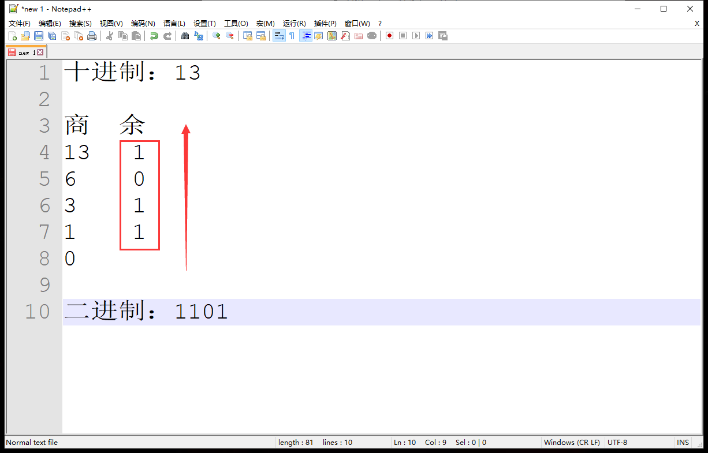
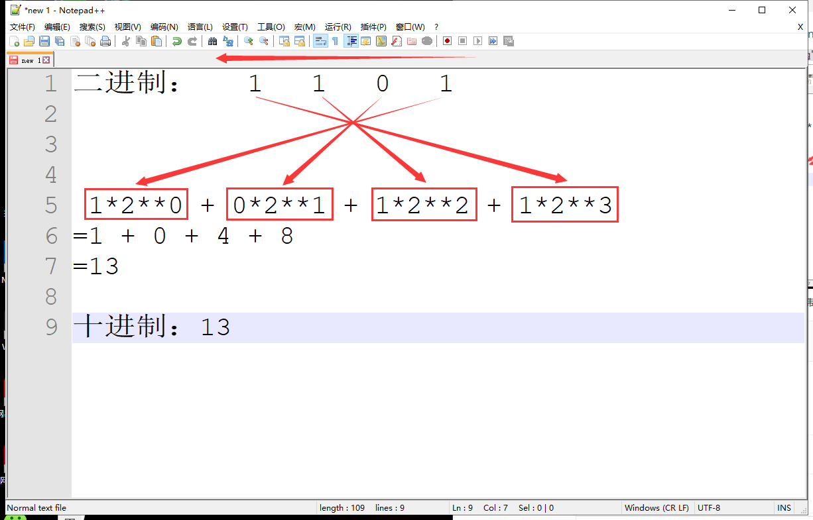
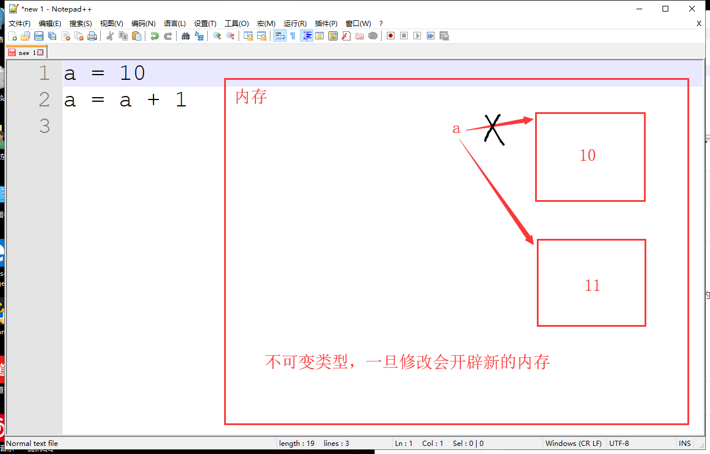

十进制转换二进制：

bin() 函数：将十进制数转换为二进制数
num = 13
print(bin(num)) # 1101二进制转换十进制

int() 函数：其中第二个参数传入几进制数，第一个参数传入对应进制数
num = "1101"
print(int(num, 2)) # 13什么是不可变/可变类型数据
整型是不可变类型数据

id() 函数：查看内存地址
a = 10
print(id(a)) # 1956675984
a = a + 1
print(id(a)) # 1956676016什么是索引？
索引只给有序数据类型使用
索引的表示
str[下标]正索引和反索引
a = "粪发涂墙的郭老湿"
print(a[0]) # 粪
print(a[3]) # 墙
print(a[5]) # 郭
print(a[-3]) # 郭注意：索引时，超出最大索引值会报错
a = "粪发涂墙的郭老湿"
print(a[10]) # IndexError: string index out of range上面的例子，如果想要得到"粪发涂墙"，只能挨个索引再进行拼接
a = "粪发涂墙的郭老湿"
a1 = print(a[0])
a2 = print(a[1])
a3 = print(a[2])
a4 = print(a[3])
print(a1 + a2 + a3 + a4) # 粪发涂墙是不是很麻烦 ，可以利用切片
切片只给有序数据类型使用
切片格式
str[start: end: step]特点：顾头不顾腚
从开头切片不用输入start；
切到结尾不用输入end；
从开头切到结尾都不用输入
a = "粪发涂墙的郭老湿"
mes = a[:4] # 从开头切不用输入start
print(mes) # 粪发涂墙a = "粪发涂墙老污郭"
print(a[::2]) # 粪涂老郭步长若为负数，则反向切片
注意：若反向切片，start和end的位置是从后往前取的
a = "粪发涂墙老污郭"
print(a[::-2]) # 郭老涂粪
print(a[-2:-6:-1]) # 污老墙涂
a = "粪发涂墙老污郭"
a_inversion = a[::-1]
print(a_inversion) # 郭污老墙涂发粪
| str.upper() | 全部变为大写 |
|---|---|
| str.lower() | 全部变为小写 |
| str.startswith(n) | 判断是否以n开头 |
| str.endswith(n) | 判断是否以n结尾 |
| str.count(n) | 计算n出现的次数 |
| str.strip() | 去掉两端空格、\n、\t |
| str.split(n) | 以n切割 |
| str.replace(old, new) | 替换 |
| str.isalnum() | 判断是否由数字、中文、字母构成 |
| str.isalpha() | 判断是否由中文、字母构成 |
| str.isdigit() | 判断是否由阿拉伯数字构成 |
| str.isdecimal() | 判断是否由十进制数字构成 |
str.upper()
a = "zxdznb"
new_a = a.upper()
print(a) # 不可变类型，原字符串不变
print(new_a) # ZXDZNB
str.lower()
a = "ZXDZNB"
new_a = a.lower()
print(a) # 不可变类型，原字符串不变
print(new_a) # zxdznb
应用：登录验证码，不区分大小写
verify_code = "eF7d"
while True:
user = input("账号：")
pwd = input("密码：")
while True:
print(f"验证码：{verify_code}")
vc = input("请输入验证码：")
if vc.upper() == verify_code.upper(): # 全部变为大写
break
else:
print("输入错误，请重新输入！")
if user == "ZXD" and pwd == "zxd123":
print("欢迎回来")
break
else:
print(”账号密码错误，请重新输入！“)
str.startswith(n)
a = "zxdznb"
print(a.startswith("z")) # True
print(a.startswith("x")) # False
print(a.startswith("x", 1, 5)) # True
print(a.startswith("z", 1, 5)) # False
str.endswith(n)
a = "zxdznb"
print(a.endswith("b")) # True
print(a.endswith("x")) # False
print(a.endswith("n", 1, 5)) # True
print(a.endswith("z", 1, 5)) # False
str.count(n)
a = "zxdznb"
print(a.count("z")) # 2
print(a.count("z", 0, 3)) # 1
str.strip()
a = " zxdznb "
a1 = a.strip()
print(a1) # zxdznb
a2 = a1.strip("b")
print(a2) # zxdzn
应用：去掉用户输入账号密码时，手误多打的空格
while True:
user = input("账号：").strip()
pwd = input("密码：").strip()
if user == "ZXD" and pwd == "zxd123":
print("欢迎回来！")
break
else:
print("账号密码错误，请重新输入")
str.split()
a1 = "zxd znb"
lst1 = a1.split()
print(lst1[0], lst1[1]) # zxd znb
a2 = "zxd,znb"
lst2 = a2.split(",")
print(lst2[0], lst2[1]) # zxd znb
a3 = "xdznbznb"
lst3 = a3.split("z", 1)
print(lst3[0], lst3[1]) # xd nbznb
str.replace(old, new)
a = "zxdhnbhnb"
new1_a = a.replace("h", "z")
print(new1_a) # zxdznbznb # 全部替换
new2_a = a.replace("h", "z", 1)
print(new2_a) # zxdznbhnb # 替换一次
str.isalnum()
a1 = "zxd666"
a2 = "zxd_666"
print(a1.isalnum()) # True
print(a2.isalnum()) # False
str.isalpha()
a1 = "zxd最nb"
a2 = "zxd666"
print(a1.isalpha()) # True
print(a2.isalpha()) # False
str.isdigit()
a1 = "666"
a2 = "六六六"
print(a1.isdigit()) # True
print(a2.isdigit()) # False
str.isdecimal()
a1 = "66"
a2 = "0x42"
print(a1.isdecimal()) # True
print(a2.isdecimal()) # False
for i in xxx:
循环体
一个面试题
for i in "abcde":
pass
print(i) # 循环最后给变量i赋值的是e，没有变动e一直指向e
理解for循环和函数自上而下执行机制
num = 1
count = 3
while count:
for i in "abc":
print(i + str(num)，end=",")
print()
count -= 1
num += 1
输出结果：
a1,b1,c1,
a2,b2,c2,
a3,b3,c3,